Поступления Oxbridge: имена и цифры
В прошлом тексте мы объясняли, как читать списки поступлений: искать суммы, смотреть на географию, отличать громкое имя от правильного университета. Теперь — наш собственный список. Читайте его по тем же правилам, мы ничего не будем сглаживать.
И сразу оговорка, с которой должен начинаться любой такой текст: ниже — офферы, то есть предложения о зачислении. Учиться каждый выпускник будет в одном университете, а предложений у сильного выпускника всегда несколько. Почему так устроена система — мы уже разбирали.
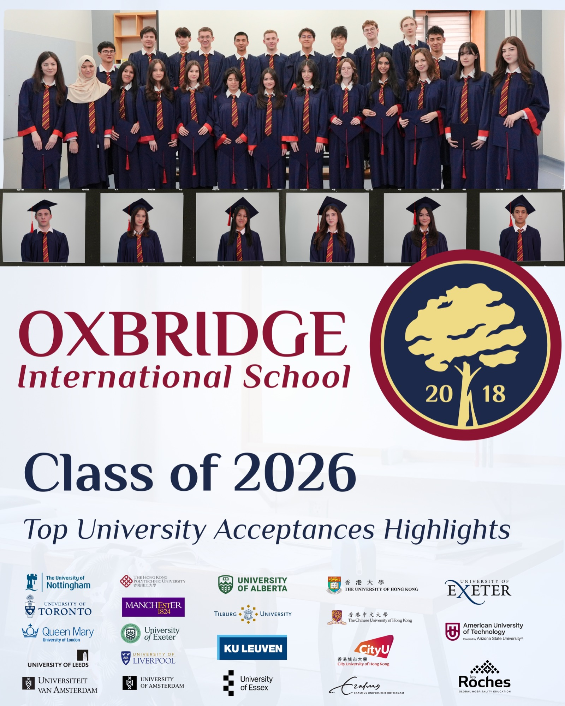
Сначала суммы
Стипендия — единственная строка, которую невозможно надуть: это финансовое решение приёмной комиссии, у которой нет причин делать комплименты школе из Ташкента. В этом выпуске стипендии получили семь наших выпускников:
- Антонина Тен — University of California, Santa Cruz: $40 000 (и ещё £2 000 от University of Leeds)
- Рафа Нарешвари — University of Toronto: $60 000; Hong Kong Polytechnic University: полное покрытие обучения
- Бобур Каюмов — Iowa State University: $48 000
- Милана Нормухамедова — University of Glasgow: £10 000 (и 20% от Middlesex University Dubai)
- Фариха Хидоятова — University of Birmingham Dubai: 269 844 AED
- Дониёр Эшонхужаев — University of Leeds: £6 000
- Элбек Алимов — American University of Technology (Arizona State University): 30% стоимости обучения
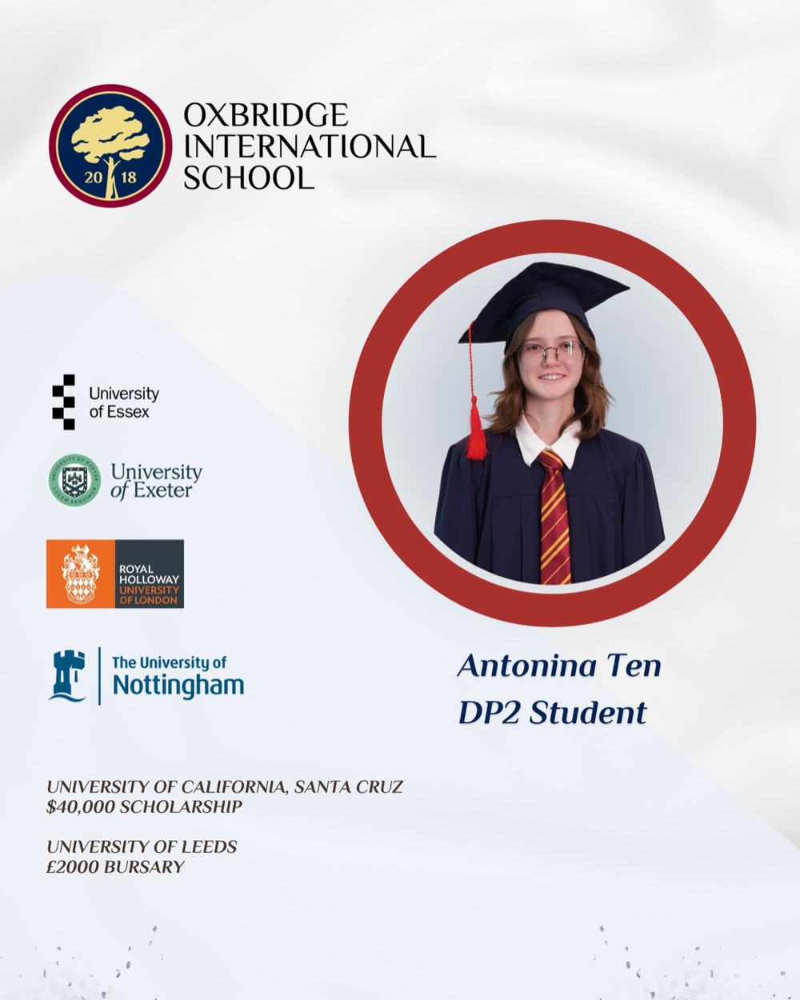
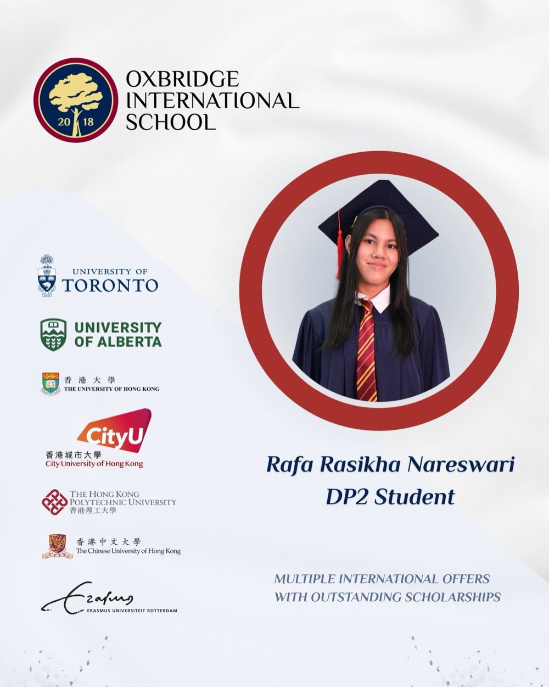
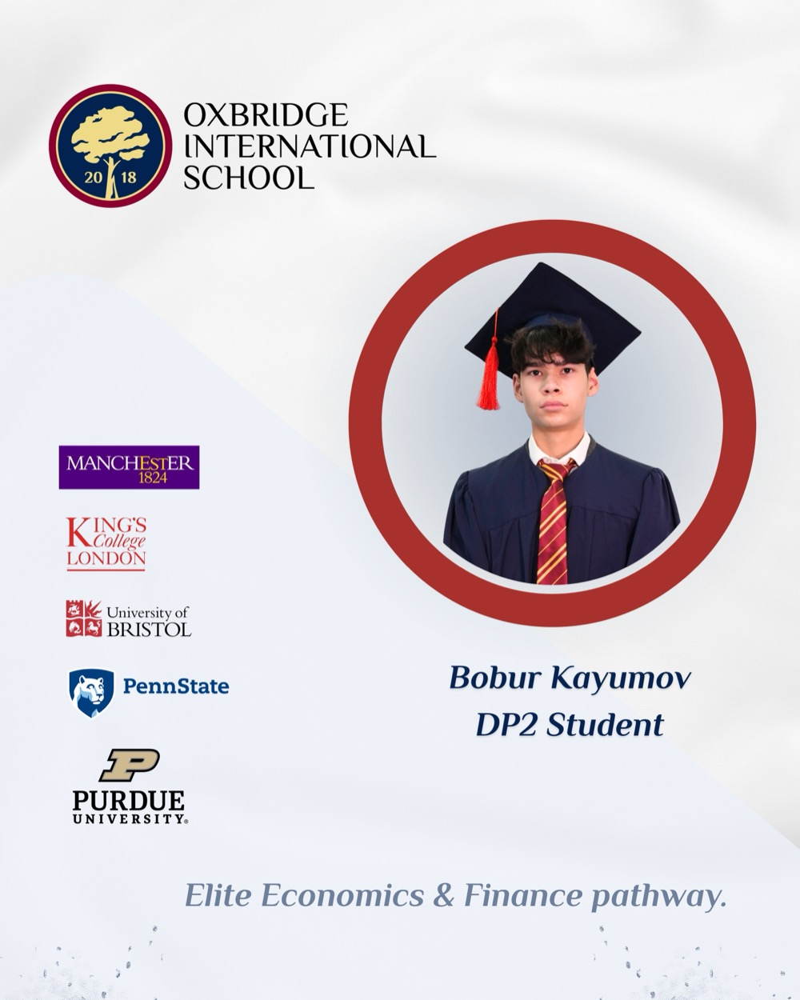
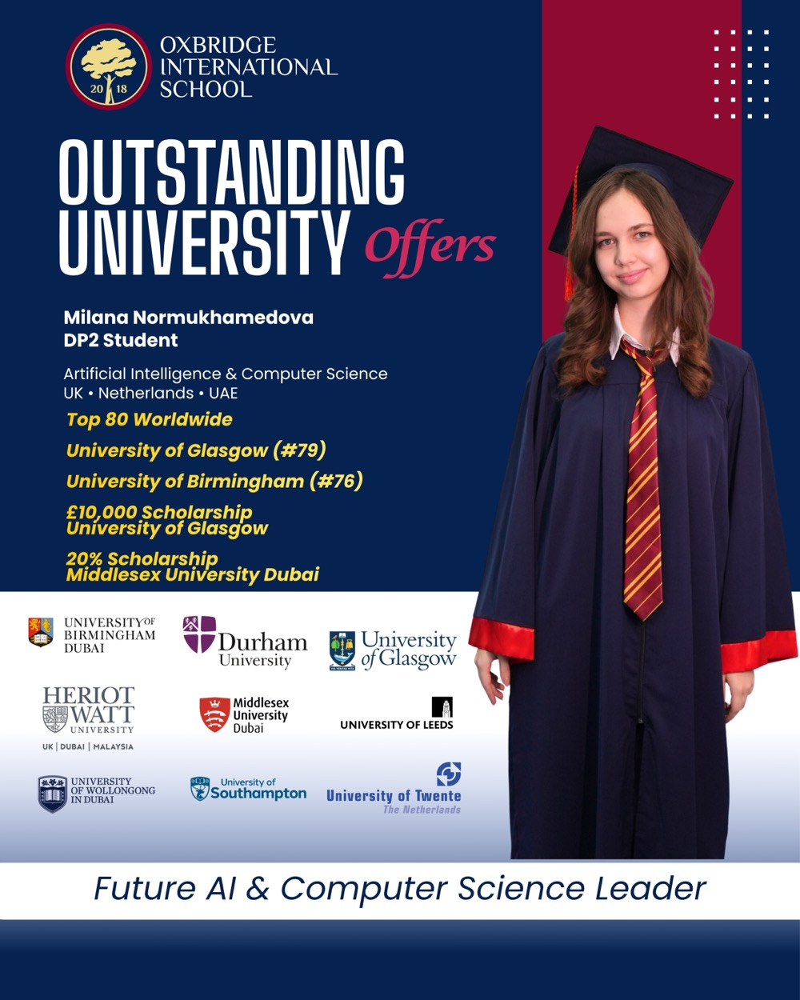
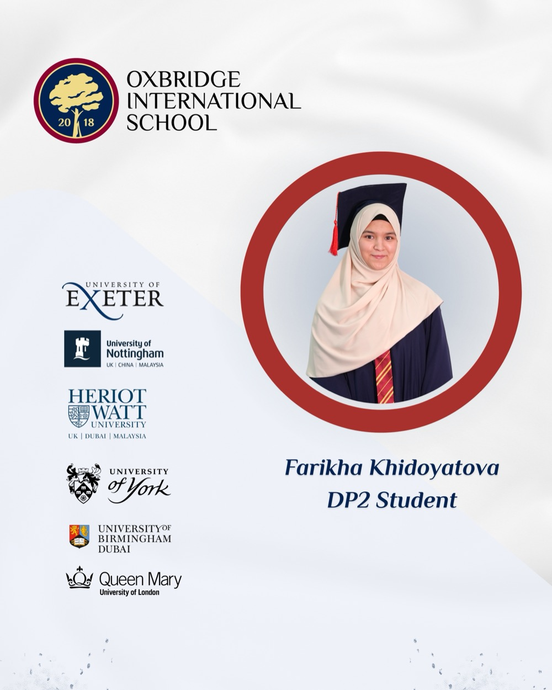
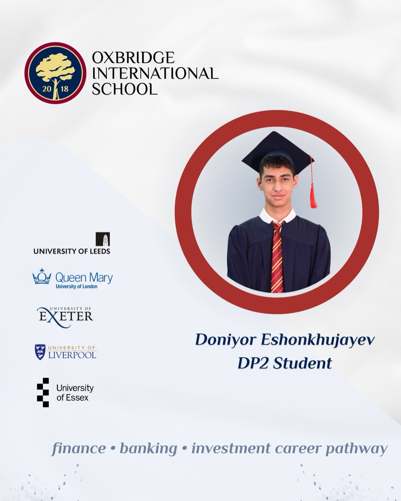
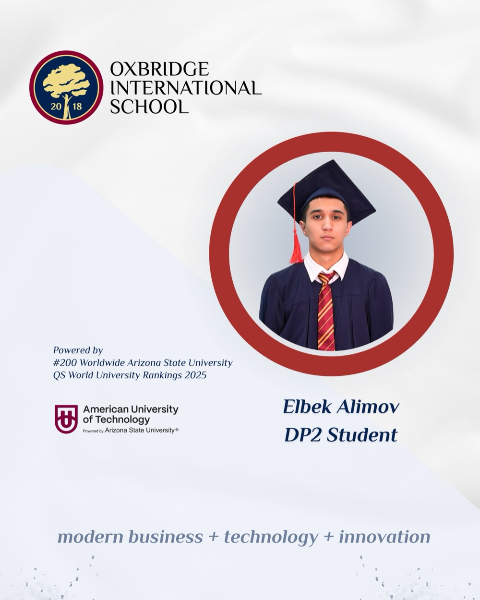
Каждая из этих цифр означает одно и то же, сказанное разными валютами: университет посмотрел на ребёнка из Ташкента и решил, что готов за него платить.
Правильный университет, а не только громкий
Общие рейтинги работают только внутри академических дисциплин — дальше начинается профессия. В этом выпуске есть поступления, которые не впечатлят человека, листающего QS сверху вниз, и именно ими мы гордимся особенно:
- Марьям Демьянова — Gobelins Paris, анимационная школа номер один в мире. Для будущего аниматора это победа большего масштаба, чем Оксфорд.
- Бехруз Рашидов — Les Roches, второе место на планете в гостиничном менеджменте.
- Икрам Юсупов — аэрокосмическая инженерия: University of Edinburgh, King's College London, Queen Mary University of London.
- Маюри Кузминова — промышленный дизайн в Eindhoven University of Technology, инженерной столице Нидерландов.
- Регина Имамалиева — Pre-Med трек в США, The College of New Jersey: длинная дорога к медицине, начатая правильно.
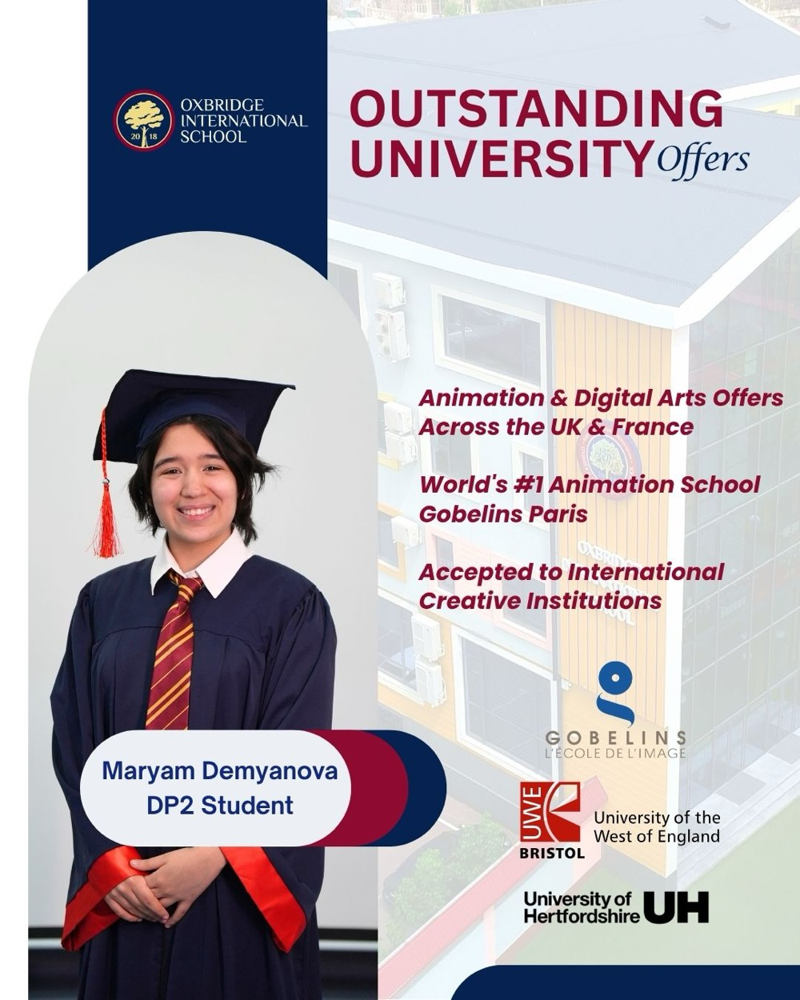
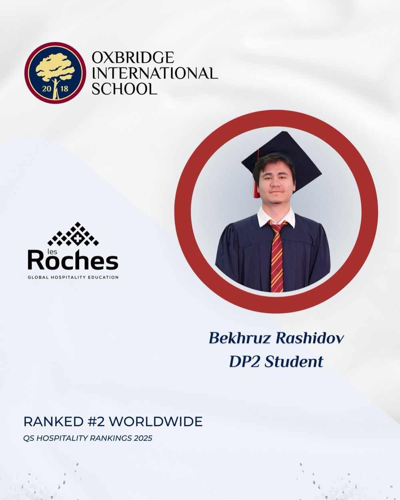
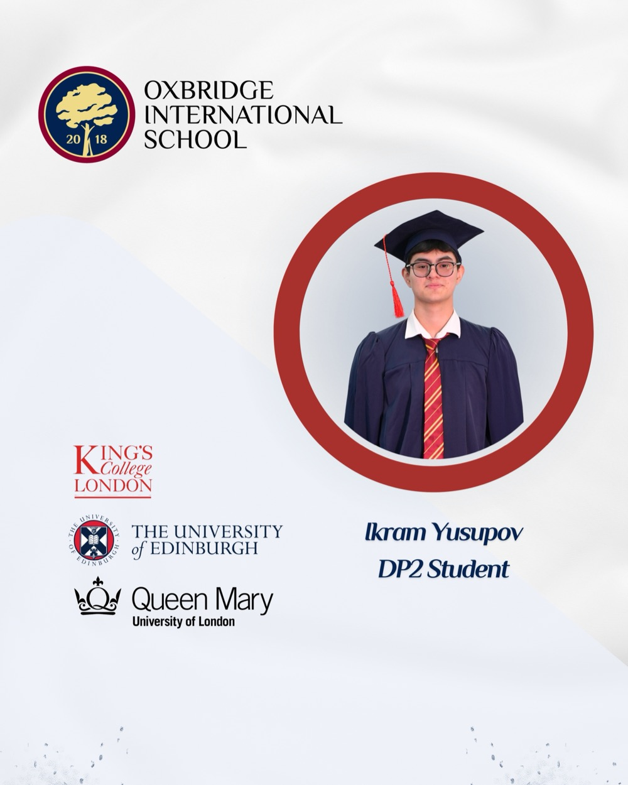
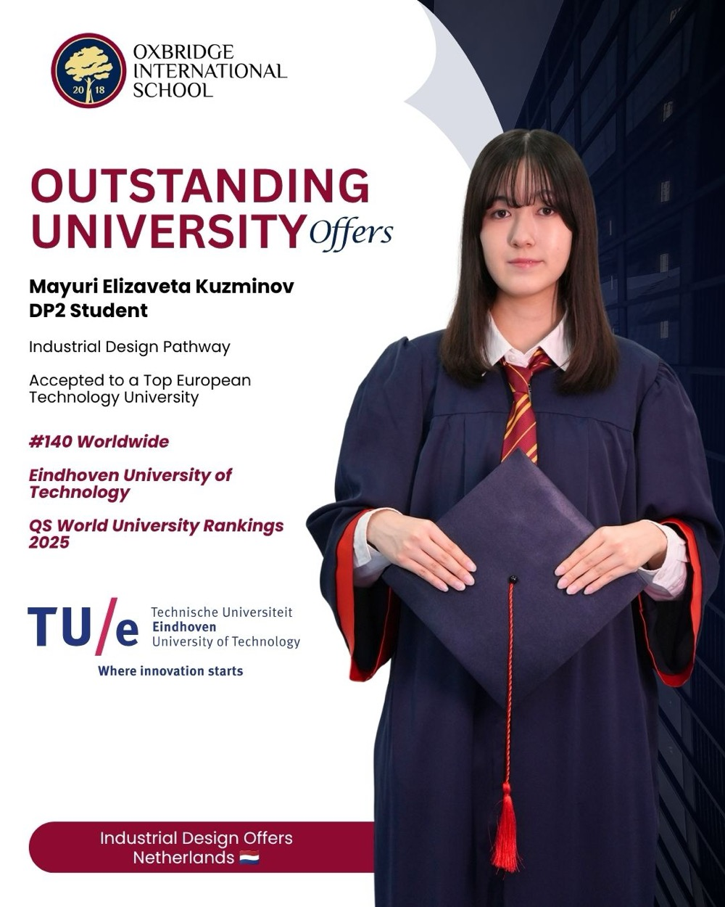
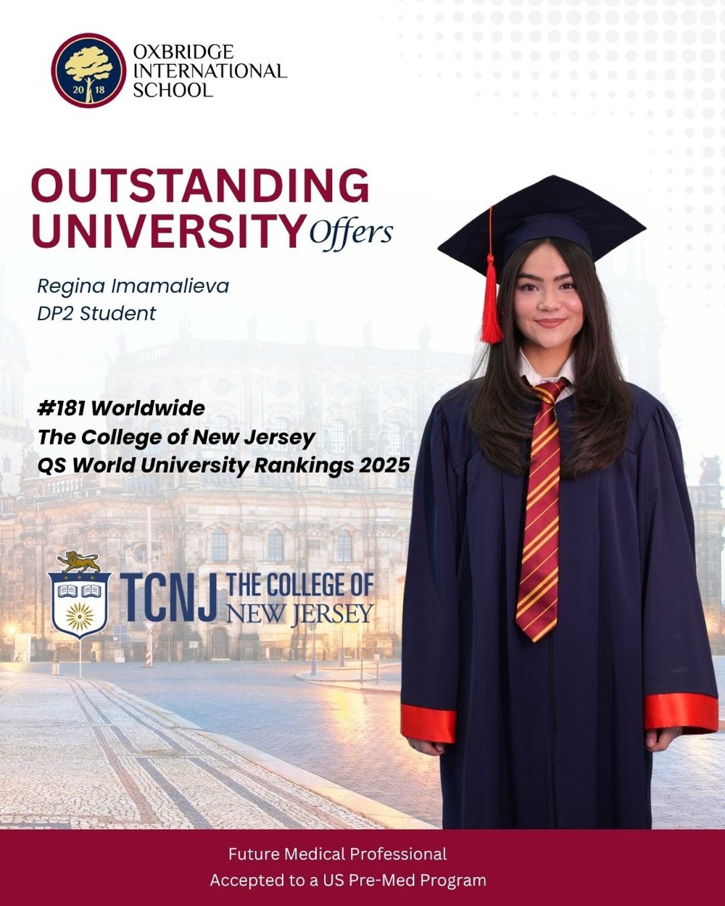
Такие траектории не возникают в одиннадцатом классе. Анимация, аэрокосмос, медицина — это профили, которые выращивались годами, и каждый из них когда-то начался с разговора «кем ты хочешь быть», заданного вовремя.
География
Семнадцать выпускников — десять стран на трёх континентах: США, Канада, Великобритания, Нидерланды, Бельгия, Франция, Гонконг, Китай, ОАЭ, Турция. За каждой страной — собственный алгоритм подачи: голландская система не похожа на британскую, американская требует эссе и портфолио, гонконгская живёт по своему календарю. Когда дети одной школы разъезжаются так широко, это не везение — это значит, что их вели по нескольким системам параллельно. А почему одни и те же школьные баллы вообще читают и в Торонто, и в Гонконге, и в Амстердаме — первый текст этой серии.
Весь список — не только витрина
Мы сами советовали спрашивать школу про середину класса, поэтому публикуем не подборку лучших, а всех, о ком рассказывали в этом сезоне:
| Выпускник | Направление | Офферы |
|---|---|---|
| Regina Imamalieva | Pre-Med | The College of New Jersey (США) |
| Mayuri Elizaveta Kuzminov | Industrial Design | Eindhoven University of Technology (Нидерланды) |
| Arina Sereda | — | KU Leuven, University of Amsterdam, Erasmus University Rotterdam |
| Laylo Nigmatova | Marketing & Business | University of Wollongong in Dubai, Heriot-Watt University, Özyeğin University, Middlesex University Dubai, Xi'an Jiaotong-Liverpool University |
| David Kokora | Economics, Finance & Global Law | University of Amsterdam, Tilburg University, University of Nottingham, Xi'an Jiaotong-Liverpool University |
| Antonina Ten | — | UC Santa Cruz ($40 000), University of Leeds (£2 000), University of Nottingham, University of Exeter, University of Essex, Royal Holloway |
| Elbek Alimov | Business & Technology | American University of Technology / ASU (30%) |
| Ikram Yusupov | Aerospace Engineering | University of Edinburgh, King's College London, Queen Mary University of London |
| Bekhruz Rashidov | Hospitality | Les Roches (#2 QS Hospitality) |
| Nikita Podyalyuk | Business Management | Penn State, Arizona State, Rutgers, Pace University (США) |
| Farikha Khidoyatova | Business Management | University of Birmingham, Birmingham Dubai (269 844 AED), University of Nottingham, University of Exeter, Queen Mary, Heriot-Watt, University of York |
| Jonathon Yang | Business Administration | York University (Канада) |
| Rafa Rasikha Nareswari | — | University of Hong Kong, University of Toronto ($60 000), HK Polytechnic (100%), University of Alberta, CUHK, City University of Hong Kong, Erasmus Rotterdam |
| Maryam Demyanova | Animation & Digital Arts | Gobelins Paris (#1 в мире), UWE Bristol, University of Hertfordshire |
| Milana Normukhamedova | AI & Computer Science | University of Glasgow (£10 000), Birmingham, Leeds, Southampton, Durham, Twente, Wollongong, Heriot-Watt, Middlesex Dubai (20%) |
| Bobur Kayumov | Economics & Finance | University of Manchester, King's College London, Bristol, Iowa State ($48 000), Michigan State, Penn State, Purdue |
| Doniyor Eshonkhujayev | Finance | University of Exeter, University of Leeds (£6 000), Queen Mary, Liverpool, Essex |
Что стоит за таблицей
У каждой строки было одно общее: в конце школы на столе у ребёнка лежало несколько согласий, и он выбирал сам — страну, профессию, свою будущую жизнь. Никто из них не подстраивал мечту под формат аттестата.
Если вы читаете эту таблицу глазами родителя семилетки — приходите к нам с теми самыми пятью вопросами, включая вопрос про середину класса. Нам будет что ответить.